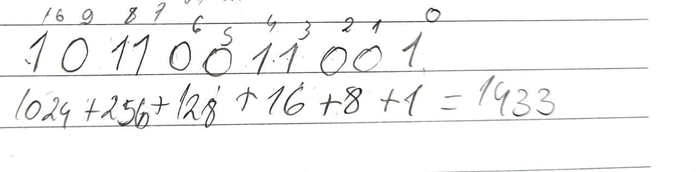

Voltar para o inicio
Voltar para o inicio
| Sistema decimal | Sistema binário |
|---|---|
| 0 | 0 |
| 1 | 1 |
| 2 | 10 |
| 3 | 11 |
| 4 | 100 |
| 5 | 101 |
| 6 | 110 |
| 7 | 111 |
| 8 | 1000 |
| 9 | 1001 |
| 10 | 1010 |
Ex:
Ex:
| 0+0 = | 0 |
| 1+0 = | 1 |
| 1+1 = | 10 |
| 0-0 = | 0 |
| 1-0 = | 1 |
| 1-1 = | 0 |
| 0-1 = | pedir emprestado |
| Sistema decimal | Sistema octal |
|---|---|
| 0 | 0 |
| 1 | 1 |
| 2 | 2 |
| 3 | 3 |
| 4 | 4 |
| 5 | 5 |
| 6 | 6 |
| 7 | 7 |
| 8 | 10 |
| 9 | 11 |
| 10 | 12 |
Ex:
Ex:
Ex:
| Sistema decimal | Sistema hexadecimal |
|---|---|
| 0 | 0 |
| 1 | 1 |
| 2 | 2 |
| 3 | 3 |
| 4 | 4 |
| 5 | 5 |
| 6 | 6 |
| 7 | 7 |
| 8 | 8 |
| 9 | 9 |
| 10 | A |
| 11 | B |
| 12 | C |
| 13 | D |
| 14 | E |
| 15 | F |
É necessario fazer a divisão sucessiva
Para converter de octal para decimal é o mesmo processo de conversão de binário para decimal, é necessario fazer o numero vezes 16 com expoente
Agrupa de 4 em 4 e transforma em algarismo hexadecimal
É necessario fazer divisão sucessiva
"A ideia de função surgiu de observações de fatos que ocorrem na natureza. A partir dessas observações é que surgiram os enunciados de leis que estabeleceram relações entre causas e efeitos. Em muitas situações práticas, o valor de uma grandeza depende do valor de uma outra grandeza. Existe, portanto, uma relação de dependência entre essas grandezas"
"De uma forma bastante simplificada, podemos dizer que o domínio de uma função f(x) é o conjunto de todos os valores que a variável independente x pode assumir. É o conjunto de entrada. A imagem, por sua vez, é o conjunto de saída. Ou seja, o conjunto dos correspondentes de x pela função dada."